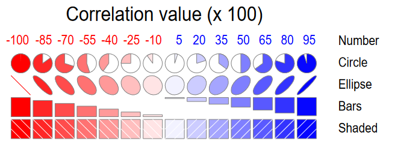
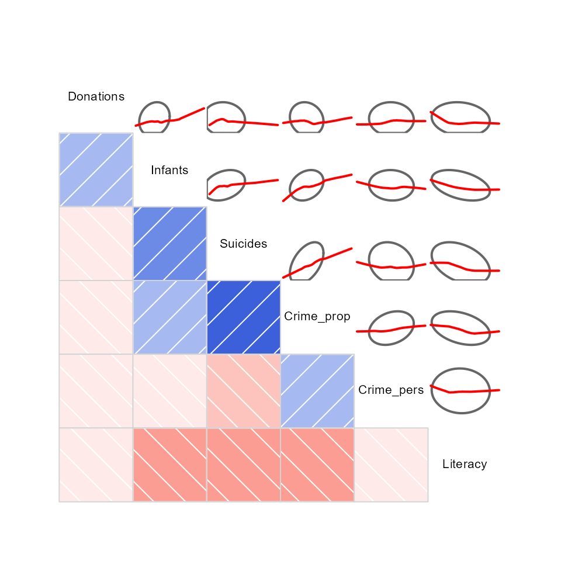
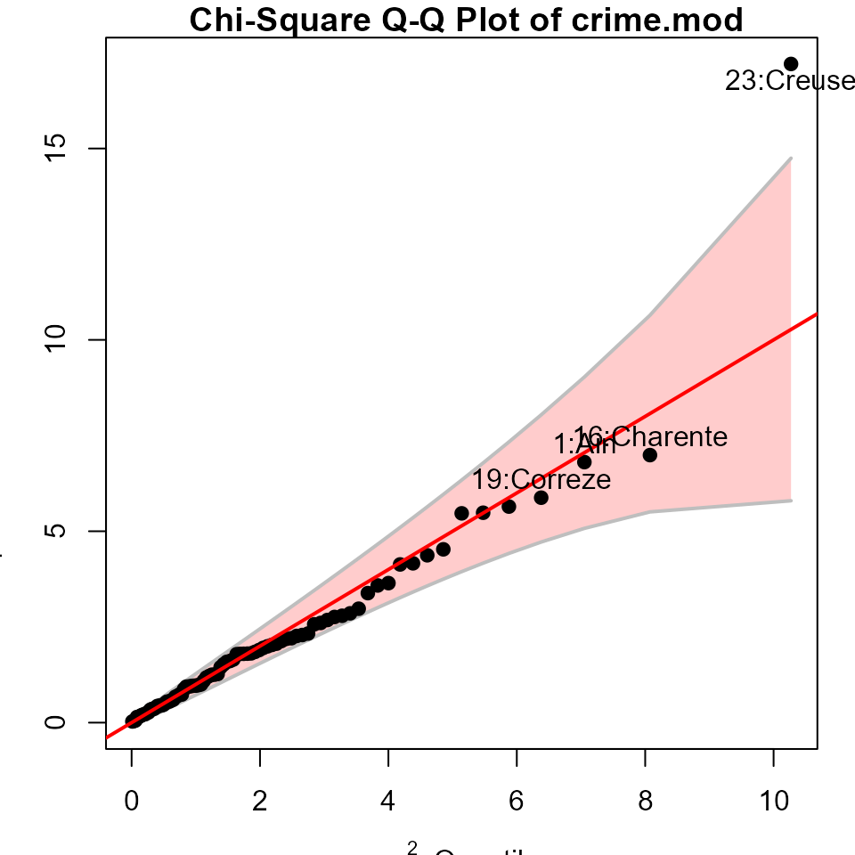
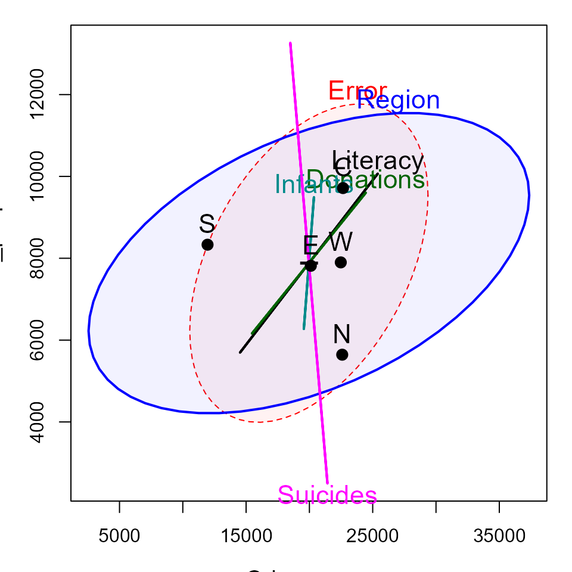

Guerry data: Multivariate Analysis
Michael Friendly
2025-01-02
Source:vignettes/guerry-multivariate.Rmd
guerry-multivariate.RmdAndré-Michel Guerry’s Essai sur la Statistique Morale de la France (Guerry 1833) collected data on crimes, suicide, literacy and other “moral statistics” for various départements in France. He provided the first real social data analysis, using graphics and maps to summarize this multivariate dataset. One of his main goals in this ground-breaking study was to determine if the prevalence of crime in France could be explained by other social variables.
In 1833, the scatterplot had not yet been invented; the idea of a correlation or a regression was still 50 years in the future (Galton 1886). Guerry displayed his data in shaded choropleth maps and semi-graphic tables and argued how these could be seen as implying systematic, lawful relations among moral variables.
In this analysis, we ignore the spatial context of the départements and focus on multivariate analyses of the the data set.
Load data and packages
We will primarily use the following packages, so load them now.
library(Guerry) # Guerry data
library(car) # better scatterplots
library(effects) # Effect Displays for Linear Models
library(ggplot2) # Elegant Data Visualisations Using the Grammar of Graphics
#> Error in get(paste0(generic, ".", class), envir = get_method_env()) :
#> object 'type_sum.accel' not found
library(ggrepel) # better handling of text labels
library(patchwork) # combine plots
library(heplots) # Hypothesis-Error plots
library(candisc) # Visualizing Generalized Canonical Discriminant Analysis
library(dplyr) # A Grammar of Data Manipulation
library(tidyr) # Tidy Messy Data
data(Guerry)
Guerry data set
Guerry’s (1833) data consisted of six main moral variables shown in the table below. He wanted all of these to be recorded on aligned scales so that larger numbers consistently reflected “morally better”. Thus, four of the variables are recorded in the inverse form, as “Population per …”.
| Name | Description |
|---|---|
Crime_pers |
Population per crime against persons |
Crime_prop |
Population per crime against property |
Literacy |
Percent of military conscripts who can read and write |
Donations |
Donations to the poor |
Infants |
Population per illegitimate birth |
Suicides |
Population per suicide |
The Guerry data set also contains:
-
deptandDepartment, the French ID numbers and names for the 86 départements of metropolitan France in 1830, including Corsica. -
Region: a factor with main levels “N”, “S”, “E”, “W”, “C”. Corsica is coded asNA. - A collection of 14 other related variables from other sources at the
same time. See
?Guerryfor their precise definitions.
names(Guerry)[-(1:9)]
#> [1] "MainCity" "Wealth" "Commerce" "Clergy"
#> [5] "Crime_parents" "Infanticide" "Donation_clergy" "Lottery"
#> [9] "Desertion" "Instruction" "Prostitutes" "Distance"
#> [13] "Area" "Pop1831"Among these, as other aspects of criminal behavior, we see crime
against parents, Infanticide and Prostitutes.
Clergy and Donations_clergy are considered to
be measures of moral rectitude, potentially counteracting crime.
Guerry’s questions
The main questions that concerned Guerry were whether indicators of
crime could be shown to be related to factors which might be considered
to ameliorate crime. Among these, Guerry focused most on
Literacy defined as the number of military conscripts who
could do more than mark an “X” on their enrollment form. A related
variable is Instruction, the rank recorded from Guerry’s
map; as defined, it is inversely related to Literacy.
- Other potential explanatory variables are:
-
Donations(a measure of donations to the poor), -
Donation_clergy(a measure of donations to clergy) -
Clergy(the rank of number of Catholic priests in active service, per population)
Multivariate visualization methods
Visualization methods for multivariate data take an enormous variety of forms simply because more than two dimensions of data offer exponentially increasingly possibilities. It is useful to distinguish several broad categories:
data plots : primarily plot the raw data, often with annotations to aid interpretation (regression lines and smooths, data ellipses, marginal distributions)
model plots : primarily plot the results of a fitted model, considering that the fitted model may involve more variables than can be shown in a static 2D plot. Some examples are: Added variable plots, effect plots, coefficient plots, …
diagnostic plots : indicating potential problems with the fitted model. These include residual plots, influence plots, plots for testing homogeneity of variance and so forth.
dimension reduction plots : plot representations of the data into a space of fewer dimensions than the number of variables in the data set. Simple examples include principal components analysis (PCA) and the related biplots, and multidimensional scaling (MDS) methods.
Data plots
Data plots portray the data in a space where the coordinate axes are the observed variables.
- 1D plots include line plots, histograms and density estimates
- 2D plots are most often scatterplots, but contour plots or hex-binned plots are also useful when the sample size is large.
- For higher dimensions, biplots, showing the data in principal components space, together with vectors representing the correlations among variables, are often the most useful.
Density plots
It is useful to examine the distributions of the variables and
density plots are quite informative. I want to do this
for each of the 6 main variables, so I’ll use this trick of tidy data
analysis with ggplot2:
- Reshape the data from wide to long. This gives
guerry_long, where the different variables are in a column labeledvariableand the values are invalue.
data("Guerry", package="Guerry")
guerry_long <- Guerry |>
filter(!is.na(Region)) |>
select(dept:Suicides) |>
pivot_longer(cols = Crime_pers:Suicides,
names_to = "variable",
values_to = "value")
guerry_long
#> # A tibble: 510 × 5
#> dept Region Department variable value
#> <int> <fct> <fct> <chr> <int>
#> 1 1 E Ain Crime_pers 28870
#> 2 1 E Ain Crime_prop 15890
#> 3 1 E Ain Literacy 37
#> 4 1 E Ain Donations 5098
#> 5 1 E Ain Infants 33120
#> 6 1 E Ain Suicides 35039
#> 7 2 N Aisne Crime_pers 26226
#> 8 2 N Aisne Crime_prop 5521
#> 9 2 N Aisne Literacy 51
#> 10 2 N Aisne Donations 8901
#> # ℹ 500 more rows- Plot the density, but make a different subplot by
facet_wrap(~ variable). These plots all have different scales for the X and Y (density) values, so it is important to usescales="FREE". Moreover, I’m primarily interested in the shape of these distributions, so I suppress the Y axis tick marks and labels.
ggplot(data = guerry_long,
aes(x=value, fill=TRUE)) +
geom_density(alpha=0.2) +
geom_rug() +
facet_wrap(~variable, scales="free") +
theme_bw(base_size = 14) +
theme(legend.position = "none",
axis.ticks.y=element_blank(),
axis.text.y=element_blank())You can see that all variables are positively skewed,
Donations, Infants and Suicides
particularly so, but not so much as to cause alarm.
It is also of interest to see whether and how these distributions
differ according to Region. This is easy to do, using
aes(... fill=Region)
col.region <- colors()[c(149, 254, 468, 552, 26)] # colors for region
ggplot(data = guerry_long,
aes(x=value, fill=Region)) +
geom_density(alpha=0.2) +
geom_rug() +
facet_wrap(~variable, scales="free") +
scale_fill_manual(values=col.region) +
theme_bw(base_size = 14) +
theme(legend.position = "bottom",
axis.ticks.y=element_blank(),
axis.text.y=element_blank())
For some variables, like Infants and Suicides
the differences do not seem particularly large. However, both crime
variables and Literacy show marked differences across
region.
Bivariate relations
Let’s start with plots of crime (Crime_pers and
Crime_prop) in relation to Literacy. A simple
scatterplot is not very informative. All that can be seen is that there
is not much of a relation between personal crime and literacy.
ggplot(aes(x=Literacy, y=Crime_pers/1000), data=Guerry) +
geom_point(size=2) More useful scatterplots are annotated with additional statistical summaries to aid interpretation:
- linear regression line,
- smoothed non-parametric (loess) curve, to diagnose potential non-linear relations,
- data ellipses, to highlight the overall trend and variability,
- point labels for potentially outlying or influential points.
I use ggplot2 here. It provides most of these features,
except that to label unusual points, I calculate the Mahalanobis squared
distance of all points from the grand means.
gdf <- Guerry[, c("Literacy", "Crime_pers", "Department")]
gdf$dsq <- mahalanobis(gdf[,1:2], colMeans(gdf[,1:2]), cov(gdf[,1:2]))
ggplot(aes(x=Literacy, y=Crime_pers/1000, label=Department), data=gdf) +
geom_point(size=2) +
stat_ellipse(level=0.68, color="blue", size=1.2) +
stat_ellipse(level=0.95, color="gray", size=1, linetype=2) +
geom_smooth(method="lm", formula=y~x, fill="lightblue") +
geom_smooth(method="loess", formula=y~x, color="red", se=FALSE) +
geom_label_repel(data = gdf[gdf$dsq > 4.6,]) +
theme_bw()The flat (blue) regression line and the nearly circular data ellipses show that the correlation is nearly zero; the smoothed (red) curve indicates that there is no tendency for a nonlinear relation.
Doing the same for crimes against property:
gdf <- Guerry[, c("Literacy", "Crime_prop", "Department")]
gdf$dsq <- mahalanobis(gdf[,1:2], colMeans(gdf[,1:2]), cov(gdf[,1:2]))
ggplot(aes(x=Literacy, y=Crime_prop/1000, label=Department), data=gdf) +
geom_point(size=2) +
stat_ellipse(level=0.68, color="blue", size=1.2) +
stat_ellipse(level=0.95, color="gray", size=1, linetype=2) +
geom_smooth(method="lm", formula=y~x, fill="lightblue") +
geom_smooth(method="loess", formula=y~x, color="red", se=FALSE) +
geom_label_repel(data = gdf[gdf$dsq > 4.6,]) +
theme_bw()So, somewhat surprisingly, increased literacy is associated with an increase in property crime (greater population per crime) as opposed to the situation with personal crime, which seems unrelated to literacy. Creuse again stands out as an unusual point, one that is likely to be influential in regression models.
Reconnaisance plots
Reconnaisance plots attempt to give a bird’s-eye overview of a multivariate data set. For example, to see the relations among more than two variables we could turn to a scatterplot matrix or some other display to show all pairwise bivariate relations.
For these, my preferred package is car (John Fox, Weisberg, and Price
2024) with the scatterplotMatrix function.
GGally (Schloerke et al. 2024) works within the
the ggplot2 framework, but doesn’t have the flexibility I’d
like.
library(car) # Companion to Applied Regression
scatterplotMatrix(Guerry[,4:9],
ellipse=list(levels=0.68),
smooth=FALSE)Corrgrams
Sometimes, particularly with more variables than this, we want to see
a more schematic overview.
A correlation diagram or “corrgram” (Michael Friendly 2002) is a
graphic display of a correlation matrix, allowing different renderings
of the correlation between each pair of variables: as a shaded box, a
pie symbol, a schematic data ellipse, and other options. This is
implemented in the corrgram package (Wright 2021). The
panels in the upper and lower triangles can be rendered differently, as
shown below.

For the main Guerry variables it looks like this
Or, the data in each pairwise tile can be rendered with data ellipses and smoothed curves to show possible nonlinear relations.
Another feature is that the rows/column variables can be permuted to
put similar variables together, using the order option,
which arranges the variables according to similarity of their
correlations.
corrgram(Guerry[,4:9],
upper=panel.ellipse,
order=TRUE,
lwd=2)
Here, there are a number of pairwise plots that appear markedly
nonlinear. For the main crime variables, the most nonlinear are that of
personal crime vs. donations to the poor, and property crime vs. infants
born out of wedlock and suicides. Literacy stands out here
as having negative relations with all other variables.
An alternative analysis might include:
- converting the data to ranks.
- considering transformations of some of the variables
An important feature of corrplots is that they accommodate a large
number of variables. Here I show the correlations among all
numeric variables, using corrplot.mixed from the
corrplot package. This provides for effect
ordering (M. Friendly and Kwan 2003)
of the variables in a way that puts the most highly correlated variables
adjacently, making it easier to see their patterns.
Biplots
Rather than viewing the data in data space, a biplot shows the data in the reduced-rank PCA space that explains most of the variation of the observations. This is essentially a plot of the observation scores on the first principal component overlaid with vectors representing the variables projected into PCA space.
First, we use prcomp() to carry out the PCA. We’d like
to visualize the result in relation to Region, so delete
Corsica where Region is missing.
gdata <- Guerry |>
select(Region, Crime_pers:Suicides) |> # keep only main variables
filter(!is.na(Region)) # delete Corsica (Region==NA)
guerry.pca <- gdata |>
select(-Region) |>
prcomp(scale = TRUE)
print(guerry.pca, digits=3)
#> Standard deviations (1, .., p=6):
#> [1] 1.460 1.114 1.049 0.805 0.730 0.590
#>
#> Rotation (n x k) = (6 x 6):
#> PC1 PC2 PC3 PC4 PC5 PC6
#> Crime_pers -0.0355 -0.6644 -0.5784 -0.112 -0.026 -0.4578
#> Crime_prop -0.4993 -0.0137 -0.5082 0.128 0.208 0.6575
#> Literacy 0.5205 0.1240 -0.1969 -0.120 0.813 0.0115
#> Donations -0.0910 -0.6281 0.5250 0.432 0.343 0.1304
#> Infants -0.4613 -0.0836 0.3032 -0.784 0.267 -0.0495
#> Suicides -0.5073 0.3761 -0.0313 0.394 0.326 -0.5818In the ggplot2 framework, biplots can be produced by the
ggbiplot package (Vu and Friendly 2024), but this
package is not on CRAN, so cannot be directly used in this vignette.
Instead, the code below was run locally and the result included.
if(!require(ggbiplot)) remotes::install_github("vqv/ggbiplot")
library(ggbiplot) # A ggplot2 based biplot
ggbiplot(guerry.pca, groups=gdata$Region,
ellipse=TRUE,
var.scale = 3, varname.size = 5) +
theme_bw() +
labs(color="Region") +
theme(legend.position = c(0.1, 0.8))
knitr::include_graphics("figures/ggbiplot.png")
This is OK, but there are many features of such plots that cannot be
customized (line widths, colors, … ). I prefer those created using the
heplots package.
op <- par(mar=c(5,4,1,1)+.1)
cols = colorspace::rainbow_hcl(5)
covEllipses(guerry.pca$x,
group=gdata$Region,
pooled=FALSE,
fill=TRUE, fill.alpha=0.1,
col=cols,
label.pos=c(3,0,1,1,3),
cex=2,
xlim=c(-4,4), ylim=c(-4,4),
xlab = "Dimension 1 (35.7 %)",
ylab = "Dimension 2 (20.0 %)",
cex.lab=1.4
)
points(guerry.pca$x, pch=(15:19)[Guerry$Region], col=cols[Guerry$Region])
candisc::vectors(guerry.pca$rotation, scale=5,
col="black", lwd=3, cex=1.4,
pos = c(4,2,4,2,2,2),
xpd=TRUE)
abline(h=0, v=0, col=gray(.70))
An interpretation can be read from both the directions of the variable arrows and the relative positions of the ellipses representing the scatter of the component scores for the different regions.
- The first component is largely aligned positively with
Literacyand negatively with property crime, suicides and children born out of wedlock (Infants) - The second dimension reflects mainly the correlation of personal crime and donations to the poor.
- The South region is generally lower on PC2, the West, generally higher.
- The North stands out as being higher than the others on PC1; the West somewhat higher on PC2.
Models
Here we illustrate:
- Model based plots for linear regression models predicting personal crime and property crime
- Multivariate analysis of variance (MANOVA) and HE plots for the joint relation of the crime variables to other predictors.
Predicting crime: Univariate regression
The simplest approach to predicting the crime variables would be to fit a separate multiple regression to each.
crime.mod1 <- lm(Crime_pers ~ Region + Literacy + Donations + Infants + Suicides, data=Guerry)
crime.mod2 <- lm(Crime_prop ~ Region + Literacy + Donations + Infants + Suicides, data=Guerry)Tests for the predictors are best obtained using
car::Anova() which gives partial (Type II)
tests, adjusting for other predictors, rather than the
sequential (Type I) tests provided by
stats::anova()
Anova(crime.mod1)
#> Anova Table (Type II tests)
#>
#> Response: Crime_pers
#> Sum Sq Df F value Pr(>F)
#> Region 1305075062 4 8.5222 9.789e-06 ***
#> Literacy 80862349 1 2.1121 0.1503
#> Donations 55264860 1 1.4435 0.2333
#> Infants 433571 1 0.0113 0.9155
#> Suicides 5885990 1 0.1537 0.6961
#> Residuals 2909622973 76
#> ---
#> Signif. codes: 0 '***' 0.001 '**' 0.01 '*' 0.05 '.' 0.1 ' ' 1
Anova(crime.mod2)
#> Anova Table (Type II tests)
#>
#> Response: Crime_prop
#> Sum Sq Df F value Pr(>F)
#> Region 58042604 4 2.2182 0.074873 .
#> Literacy 13063224 1 1.9969 0.161704
#> Donations 8093826 1 1.2373 0.269507
#> Infants 7058522 1 1.0790 0.302216
#> Suicides 79203021 1 12.1073 0.000835 ***
#> Residuals 497174277 76
#> ---
#> Signif. codes: 0 '***' 0.001 '**' 0.01 '*' 0.05 '.' 0.1 ' ' 1These are somewhat disappointing if you look only at the significance
stars: Only Region is significant for personal crime and
only Suicides for property crime. There is no evidence for
the argument, supported by the liberal hygenicists of Guerry’s time,
that increased Literacy would reduce crime.
For such models, we can understand the nature of the predicted
effects using the effects package. The (marginal) effect
for a given term gives the predicted values, averaging over all other
terms in the model.
plot(predictorEffects(crime.mod1, ~ Region + Literacy + Infants + Suicides),
lwd=2, main="")
Doing the same for property crime, we get:
plot(predictorEffects(crime.mod2, ~ Region + Literacy + Infants + Suicides),
lwd=2, main="")
Predicting crime: Multivariate regression
The two regression models can be fit together in a multivariate regression for both crime variables jointly.
crime.mod <- lm(cbind(Crime_pers, Crime_prop) ~
Region + Literacy + Donations + Infants + Suicides, data=Guerry)
Anova(crime.mod)
#>
#> Type II MANOVA Tests: Pillai test statistic
#> Df test stat approx F num Df den Df Pr(>F)
#> Region 4 0.41897 5.0349 8 152 1.472e-05 ***
#> Literacy 1 0.03657 1.4234 2 75 0.2473351
#> Donations 1 0.02421 0.9304 2 75 0.3989076
#> Infants 1 0.01575 0.5999 2 75 0.5514648
#> Suicides 1 0.17728 8.0804 2 75 0.0006638 ***
#> ---
#> Signif. codes: 0 '***' 0.001 '**' 0.01 '*' 0.05 '.' 0.1 ' ' 1As a quick check on the assumption that the residuals are bivariate normally distributed and a check for outliers, a Q-Q plot graphs the squared Mahalanobis distances of the residuals against the corresponding quantiles these would have in a bivariate normal distribution. The data for Creuse stands out as a potential outlier.

HE plots
Hypothesis-Error (HE) plots (Michael Friendly 2007; J. Fox, Friendly, and Monette 2009; Michael Friendly, Fox, and Georges Monette 2022) provide a convenient graphical summary of hypothesis tests in multivariate linear model. They plot a data ellipse for the residuals in the model, representing the matrix in the test statistics (Roy’s maximum root test, Pillai and Hotelling trace criteria and Wilks’ Lambda). Overlaid on this are ellipses for each term in the model, representing the data ellipses for the fitted values. Using Roy’s test, these have a convenient interpretation: a term is significant iff the H ellipse projects anywhere outside the E ellipse. For a 1 df (regression) variable, the H ellipse collapses to a line.
heplot(crime.mod,
fill=TRUE, fill.alpha=0.05,
cex=1.4, cex.lab=1.3 )
In this plot, the effect of Suicides is completely
aligned with crimes against property. The effect of Region
is positively correlated with both types of crime. The means for the
regions show that the South of France is lower (worse) on personal
crime; the other regions vary most in property crime, with the North
being lower and the Center being higher.
Canonical plots
The HE plot displays these relations in data space. An alternative is provided by canonical discriminant analysis, which finds the weighted sums of the response variables leading to the largest test statistics for the terms, which can be visualized in canonical space.
The analysis below reflects the effect of Region in
relation to both crime variables.
crime.can <- candisc(crime.mod)
crime.can
#>
#> Canonical Discriminant Analysis for Region:
#>
#> CanRsq Eigenvalue Difference Percent Cumulative
#> 1 0.322365 0.47572 0.36879 81.647 81.647
#> 2 0.096603 0.10693 0.36879 18.353 100.000
#>
#> Test of H0: The canonical correlations in the
#> current row and all that follow are zero
#>
#> LR test stat approx F numDF denDF Pr(> F)
#> 1 0.61217 5.4924 8 158 3.993e-06 ***
#> 2 0.90340 2.8515 3 80 0.04248 *
#> ---
#> Signif. codes: 0 '***' 0.001 '**' 0.01 '*' 0.05 '.' 0.1 ' ' 1The HE plot for this analysis is shown below. Variable vector represent the correlations of the crime variables with the canonical dimension.
heplot(crime.can, fill=TRUE, fill.alpha=0.1,
var.col = "black",
var.cex = 1.3,
cex=1.4, cex.lab=1.3)#> Vector scale factor set to 3.014304This gives a simple interpretation of the differences in
Region on the crime variables. The first canonical
dimension accounts for 83% of differences among the regions, and this is
nearly perfectly aligned with personal crime, with the largest
difference between the South and the other regions. The second canonical
dimension, accounting for the remaining 17%, is perfectly aligned with
property crime. On this dimension, the North stands out compared to the
other regions.